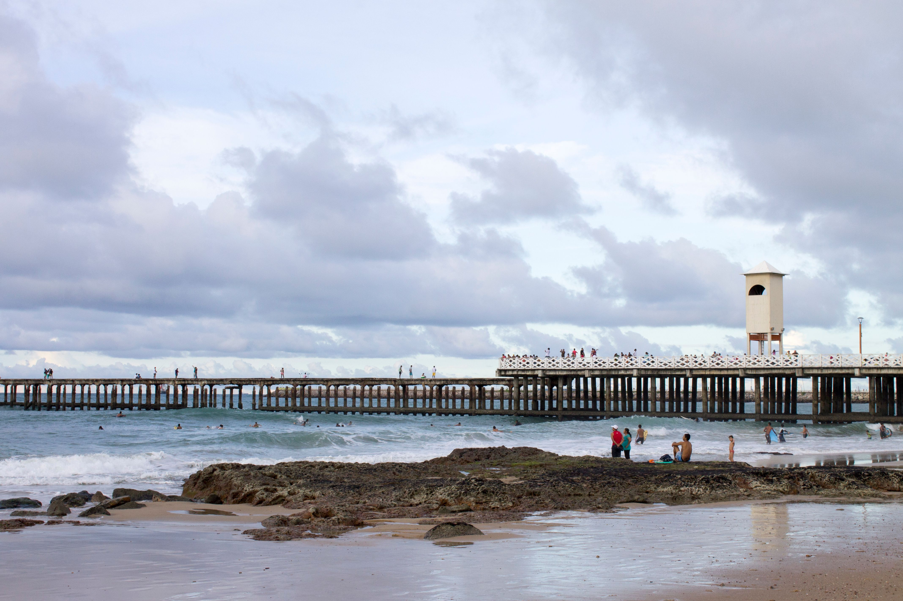
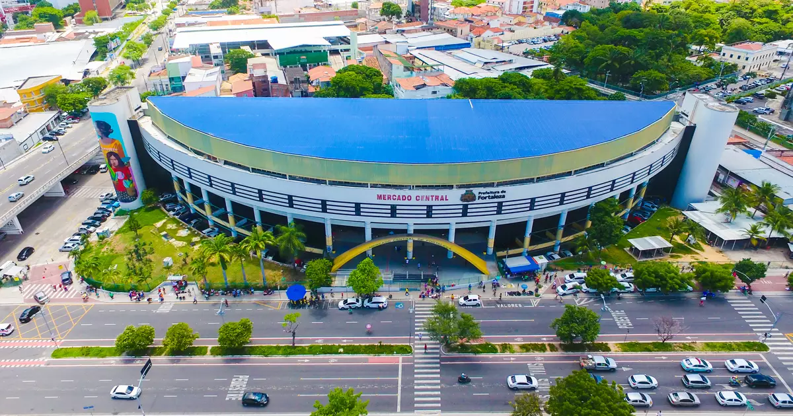
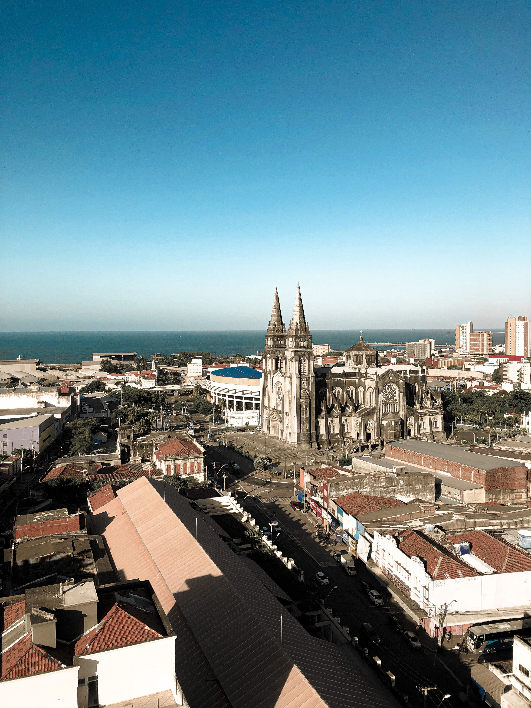

Fortaleza capital do Ceará

Fortaleza é a capital do Ceará e um dos principais destinos turísticos do Nordeste brasileiro. A cidade se destaca principalmente por suas praias, pelo clima tropical e pela diversidade cultural. Com cerca de 34 km de litoral, Fortaleza possui diversos pontos turísticos, entre eles a Avenida Beira-Mar, que reúne praias, restaurantes, espaços de lazer e atrações culturais.
Descubra 3 atrações imperdivéis para visitar em Fortaleza
A Beira-Mar de Fortaleza reúne diferentes experiências em um só lugar, tornando-se um dos principais cartões-postais da cidade. Entre praias, gastronomia, artesanato e espaços de lazer, a região oferece atrações para diferentes públicos e momentos. Neste projeto, destacamos três lugares que representam diferentes aspectos da cultura, da culinária e da paisagem de Fortaleza, proporcionando aos visitantes uma experiência única e especial à beira do mar.

1. Mercado Central
O Mercado Central é um dos principais pontos turísticos da orla. O espaço reúne artesanato, roupas, acessórios, comidas típicas e lembranças do Ceará, sendo uma ótima opção para conhecer e levar um pouco da cultura cearense.
- Bom para:
- Compras
- Cultura

2. Praia de Iracema
A Praia de Iracema é uma das mais belas praias da Beira-Mar. O local é conhecido por suas águas cristalinas, areia branca e paisagens deslumbrantes, sendo um destino popular para turistas que buscam relaxar e desfrutar do litoral cearense.
-
Bom para:
- Alimentação
- Saborear a culinária nordestina

3. Catedral
A Catedral de Fortaleza é um dos monumentos mais importantes da cidade. Construída no século XVIII, a catedral é conhecida por sua arquitetura colonial e por abrigar importantes artefatos religiosos. O local é um importante ponto de referência para os visitantes que desejam conhecer a história e a cultura da capital cearense.
-
Bom para:
- História
- Cultura
As melhores coisas para fazer em Fortaleza revelam a essência de uma cidade marcada pelo litoral, pela cultura e pela hospitalidade cearense. Conhecida por suas belas praias e pela famosa Beira-Mar, a capital do Ceará oferece uma combinação única de paisagens, gastronomia, artesanato e história. Ao longo da cidade, você encontrará atrações que mostram a diversidade cultural de Fortaleza e proporcionam experiências marcantes para visitantes durante todo o ano.